时疫琐记
原文链接 备份链接 今年回武汉的票特别好买，几乎不用抢，就很轻易地买到了北京西站到武汉站的票。到武汉的时间是晚上八点半，就在附近的旅馆住一夜，第二天去汉口的青年路客运站坐长途客车回武穴。 我把这个计划告知我朋友后，朋友说：“不要在武汉逗 …

今天是情人节，这个往日总是被商家消费过度了的浓墨重彩的日子，这次有些暗淡。许多情人依旧还在两地分离，这只是他们这个漫长的分离期中的其中一天。因为疫情，家住武汉的齐薇与男友杨瑜瑾也极少能见面，他们封闭在各自的父母家里，只在上月底相约着拍了一组照片，在大街小巷穿了一遍。我们选择在情人节这天推出这组照片，那是个晴朗的日子。
···············
1月25日，大年初一，武汉封城的第三天，齐薇的一位朋友在整点发了一条朋友圈——“第一次在我家楼上听到武汉关的敲钟声。”一场疫情，让武汉安静了。过去，在这座人声、汽车声交错的喧闹大都市里，要听见这座古老钟楼的钟声，除非你在整点时候正好贴在大楼旁。她拿出手机，录下了这段声响，那是三公里外传来的钟声。
1月28日，齐薇和男友杨瑜瑾一同出门“扫街”。“扫街”，即揣着镜头用脚步丈量城市。那是齐薇印象中武汉半月里来的第一个晴天，之后，这样的晴天持续了有两三日，又回归阴雨。为了拍摄纪录片，杨瑜瑾在这之后一直在断断续续地出门，拍纪录片之余继续记录着城市的片段。这几天，随着确诊标准的改变，武汉新冠确诊数再度爆发，2月12日0时-24时，武汉市新增新冠肺炎病例13436例。疫情严峻程度加重，摄影师们不再出门，待在家里，带着一张张滑动着的照片，以一种特别的方式重新游览了这座江边的城市。
在网络的记忆中，在一线医院里，1月31号是那些最紧张严峻的日子里其中的一天，但对这座城市里的一些居民来说，它是最好的一天，阳光温煦，久久不散。
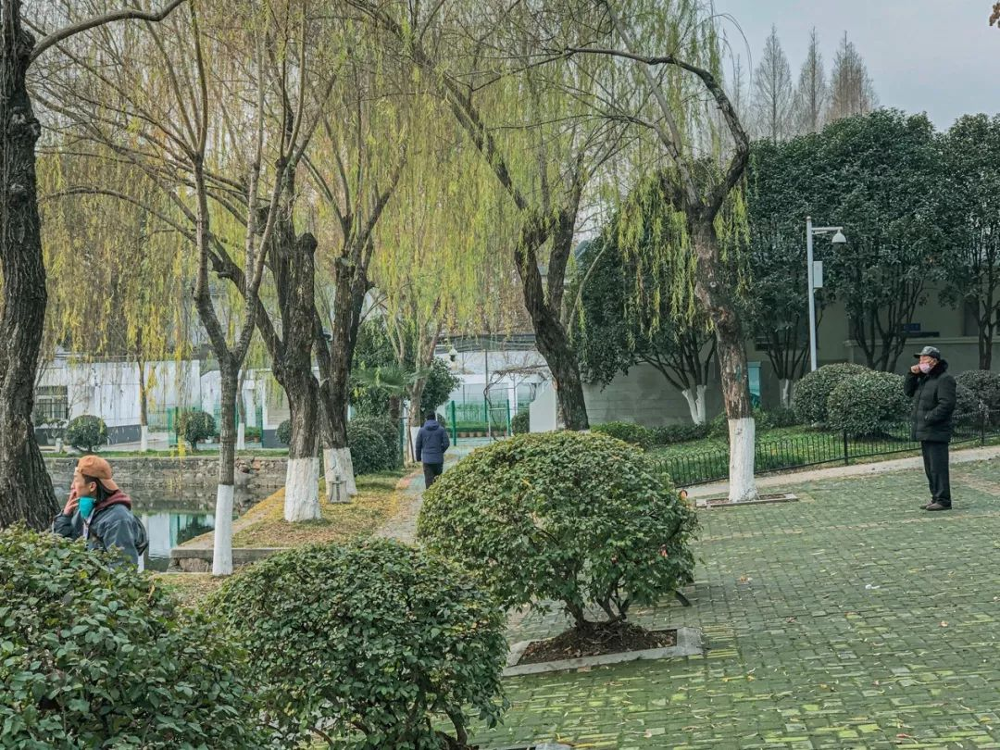
这里是四美塘公园，几个社区环绕它在中间，过去一直很热闹。齐薇录下了公园里还在大声播放的流行歌曲，《思念是一种病》。当切到下一首郑秀文的《值得》时，桥墩下打太极拳的老人起了势。
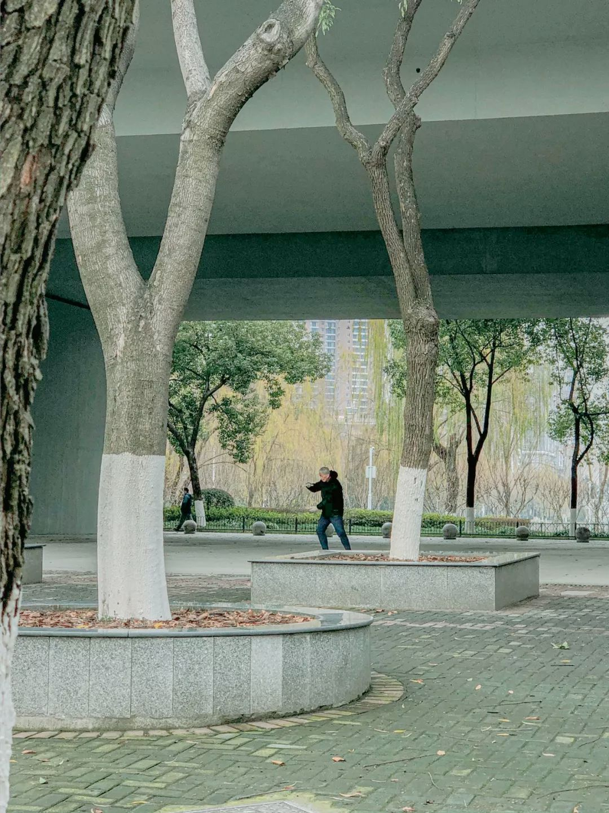
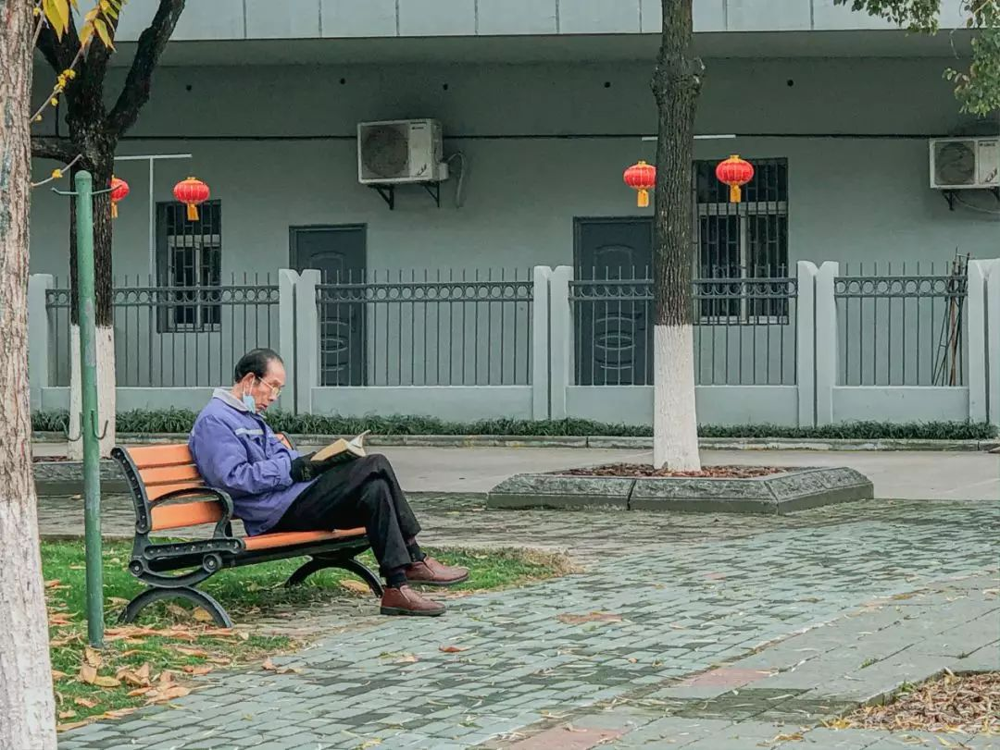
站在3楼窗口的女孩正探出窗外，举着一副望远镜。当她发现自己也出现在别人的镜头里时，笑出了声。
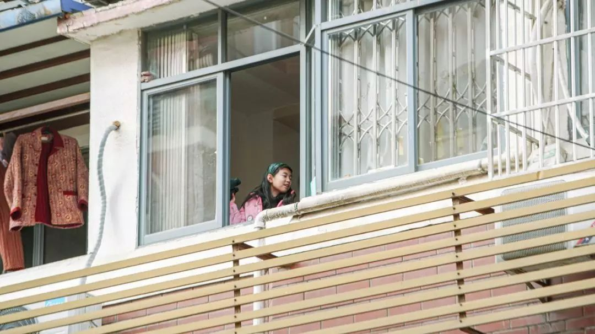

这是汉口的中山大道，天气好，一些人搬着板凳出来戴着口罩“咵天”。武汉人所说的“咵天”，类似成都和重庆方言中的“摆龙门阵”，闲来无事，扯东扯西。
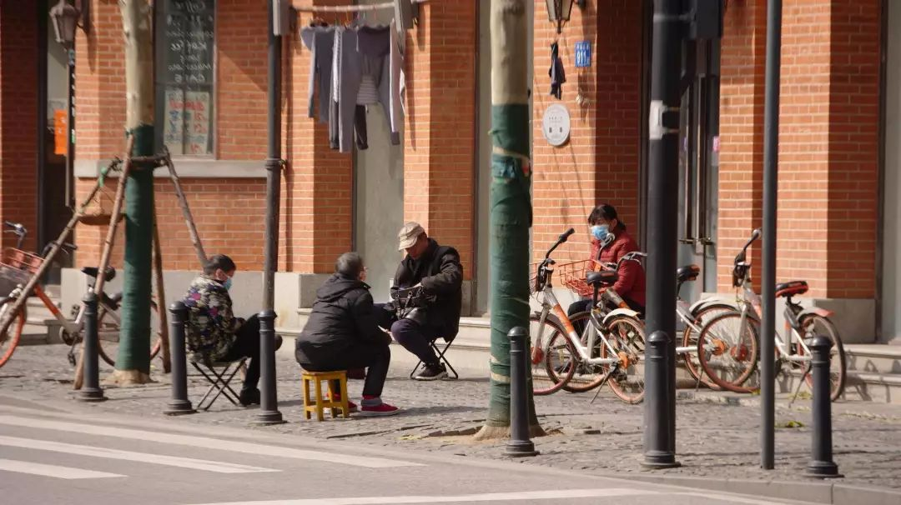
江汉路街边，老爷子搬张凳子出来晒太阳。这在平时几乎是不可能实现的——这里属于汉口早年间的租界区，欧洲风情建筑以及本地老城区特色房屋交错，游客总是要把这条街占满，一旦有人停下来拍照，就会造成交通堵塞。
 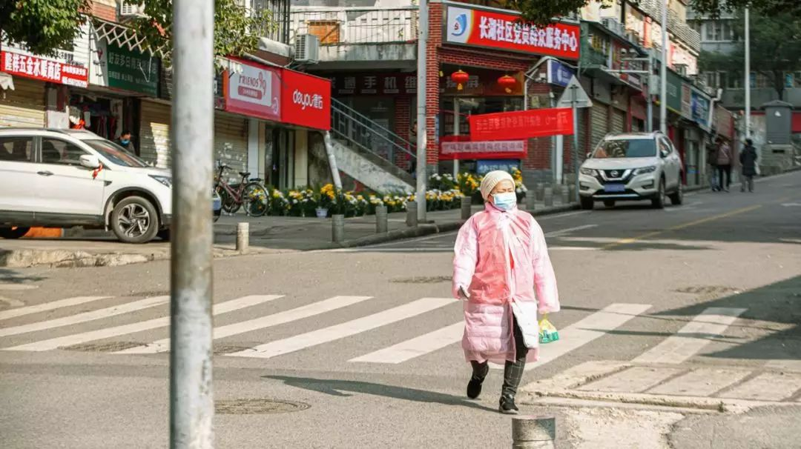
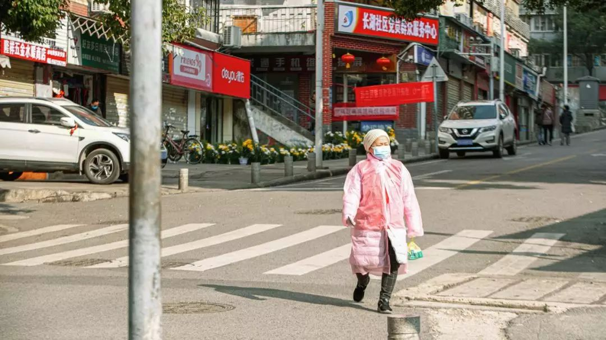
一位老太正斜穿过马路，正好直视了镜头。

也看到不肯戴口罩的老人，人们用武汉方言“不服周”（不服）来形容他们的刚烈性格，劝”不服周“的中老年人不出门是件极为困难的事，“觉得自己的身体素质好得很”。齐薇的姑姑到现在还在每天坚持去上班，做些简单的清扫、消毒工作，姑姑觉得，这个工作做起来很安全，消毒过程中顺便把身上也消了。
这里是同兴里。这种叫”里份“的武汉典型民居形式，许多生活设施都为公用，居民生活密集，互帮互助，小巷虽旧，洒扫得干净敞亮。巷子两旁两栋楼之间拉一根线，衣服就晾在中间。平日里穿过，个儿高一点，床单要拂过面庞的。
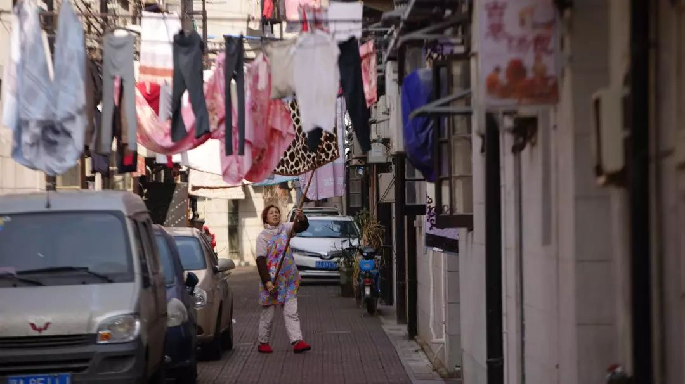
里份的一楼，如今租给了很多年轻人，屋主自己在楼上居住，互不干扰。年轻人进驻后，将古老的房屋改成创意店铺，挂上漂亮的手绘招牌。往日，这里挤满了同样年轻的游客，试戴手镯、喝点咖啡，参加手工作坊、在旅游攻略上划勾“打卡”。
如今，店门紧闭，年轻的店主与游客们如潮水褪去，这条巷子仿佛又被归还给了这里的老居民——不管怎样，衣服还是要晒的，武汉阴雨潮湿是常态，难得晴天。晃一圈，杨瑜瑾觉得，全巷子里的居民都出来晾衣服了。

天气好，杨瑜瑾家楼下关闭许久的小店也悄悄开张，一家鲜花店，一家水果店。老板娘在店内能晒到阳光的位置坐着，打着盹。有人来就卖一点，没人来也可以。

这是外卖配送员老计。杨瑜瑾跟拍了他一天，老计讲起送外卖时遇到的一个女孩子，一个人在家自我隔离了十多天，一切获取外界信息的渠道来源于网络。她咳嗽，总怀疑自己得病，又不敢去验证，总是在家哭。老计劝慰她，这个世界还没有那么可怕。回来老计对杨瑜瑾感慨，“人如果在一个地方待着不动久了，是会出问题的，你不出来晒晒太阳，你都不知道自己还活着。”
这里是武昌区的长湖正街。两个大伯坐着下棋，一个小孩站在旁边看。再旁边是一家寿衣店，被菊花盆簇拥着。
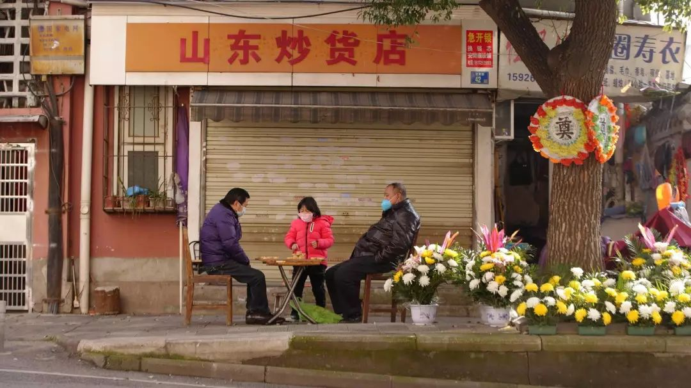
这种菊花也是武汉的春节一景。每年春节前夕，主干道的路口、立交桥下、十字路口，菊花大量出现，安安静静的一溜又一溜，像是没有人看管。但只要你走近，做出要买的样子，就会有人突然蹦出来，“买花吗”。
我们所看到的武汉，这座拥有上海、北京所无法比拟的第一代城市移民数量，并依靠他们发展起来的城市，每年春节照旧要把这些劳动者还给他们的家乡。有人做过统计，近几年，每年都会有占总人口数三分之一的人回乡过年，其中绝大部分是涌回湖北省内其他的小城、村镇。他们家中的老人，去世后就葬在屋后的山上，当他们春节时收拾行囊，要顺手带一盆摆放在墓前的菊花。
即使是疫情期间，即使在下雨的时候，这些看上去无人看管的鲜花也还待在它的位置里。刚刚封城那一两天，齐薇路过老人聚居较多的青山区，每一条街道都摆着菊花。她觉得神奇，“也不知道还会不会有人冒着雨去买，也不知道看管的人还会不会突然蹦出来。”
关于死亡丧葬的仪式感，在这个时间自然是要陷落了。传染病当前，死去的亲人被迅速处理，再见面，只能是一捧骨灰。而那些以此为业的人依然还在工作。巷子里的殡葬用品店里，老头正在制作用来烧给先人的纸房子。三层的豪宅，刚搭好了骨架，放上大木柜子和彩电，贴上新春“福”字。

老爷子桌子上的香烟，一包是黄鹤楼，40块一包那种，可阔气，另两包是便宜货，一包白金龙一包红金龙。过年了，人们兜里揣一包好烟，一包便宜烟，见人时好烟发出来，有面子。没有人的时候，就偷偷抽回便宜烟。照片只拍了一张，刚摁一下，老爷子偏头余光扫到，气汹汹，“拍么司拍（拍什么拍）”。吓跑了。
从巷子一直往外穿，就走到了桥头堡，武汉每年的渡江节都从这里出发。站在这个著名的观景位置上，扫一个连贯镜头，你可以同时看到长江大桥、湖北龟山电视塔等地标建筑。
 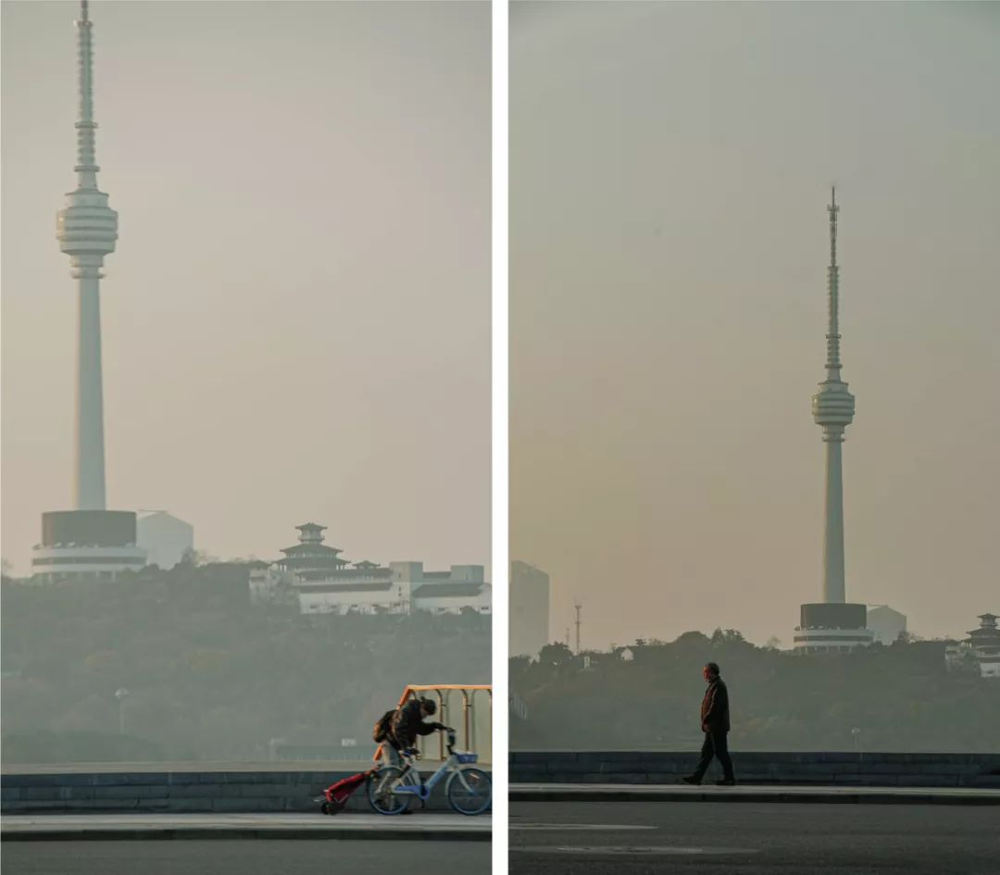
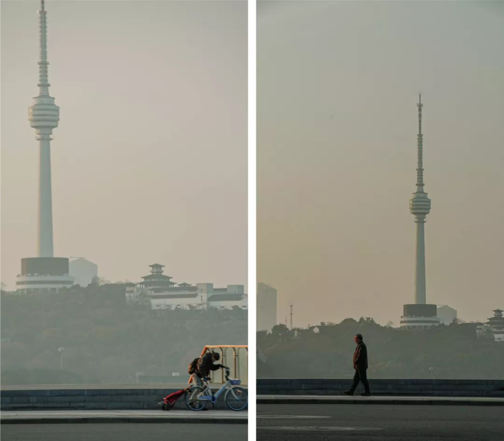
对于杨瑜瑾来说，这条江早就失去了其神秘性。长江、汉江在武汉交汇后，将武汉全城分为三个镇。长江大桥连接武昌和汉阳，二桥连接武昌和汉口。杨瑜瑾爱走路，长江大桥、二桥，他走了无数遍。“在武汉，不管你住在哪里，你几乎是每天都要过江的。”
从巷子里走出来，一直往下，你会下到临江的一排很长的阶梯，人们一般坐在上面看江景。图中背影是个年轻男性，戴了口罩，在那坐了很久。

如果你在武汉长大，你记忆里关于这个城市的光色 ，也许一半都要被长江的粼光占据。比起许多其他同样号称水都、江城的城市，长江对武汉人而言亲密得多。
每一位武汉父亲，在正值壮年时可能都游过长江，并在反复讲述中将故事渲染成孩子眼中的传奇。齐薇上小学的时候，坐在江边上玩沙子，看着爸爸和伯伯结伴下江，她记得那种当视线中失去爸爸的身影时的恐惧。那条去往天兴洲的超过1000米宽的河道，爸爸最后游了估摸有1/4。
在武汉，江水无处不在，它属于日常的市民生活，属于老一辈人刮风下雨雷打不动的江边散步，而对于那些桀骜不驯的年轻人，它也努力地长进他们的身体。
齐薇跟我讲，武汉人教小孩学游泳，不去游泳池子里，大人们认为，把孩子往江里一丢是更好的方法。她去年夏天拍了张照片，一个5、6岁的小男孩穿个裤衩嗷嗷大哭，妈妈在一旁怒吼，奶奶在一旁着急。妈妈说来说去只有一句，“哭么司哭，你下去了你就会游了。”
在武汉的老人口中，一个柔情的说法被反复传颂，觉得夏天蚊子嗡嗡，咬的难受吗？你只要去江里面把脚泡一泡，蚊子就不咬了。

在疫情压城的这些日子里，许多不同的摄影师去往江边拍照，因为江边总是有人。28号那天，有个老爷子钓上了好大一条鱼。
“真大呀，我觉得我一个人吃，可以吃一个星期。”杨瑜瑾回味起来啧啧称奇。
老人很沉稳，口罩下看不出表情，把鱼往地上一甩。齐薇用手机拍了一段视频，”他开不开心不知道，我们挺开心的。“
鱼就躺在干干的地上，卡在两个石头缝里面，一直奋力蹦着，直到他们离开的时候还在挣扎。
调转方向，往户部巷深处走，走到青龙巷，你就能看到远处的黄鹤楼。夜晚，黄鹤楼亮了起来，红得让人心惊，“像着了火一样。” 灯亮归亮，生活在这里的人没有一个人往那边望。

在齐薇印象中，自去年十月军运会开始，黄鹤楼就像这样一到夜晚就”发光“了。晚上七时，秒针刚敲过00分，整条江两岸的，包括黄鹤楼在内的所有地标楼体、山体、大桥同时亮起，赤橙黄绿青蓝紫，不停地变换。这几日，“武汉加油”的巨型LED灯又被加了上去，更加璀璨夺目。
“加油”只是几个字，勇气都在武汉人心里。
疫情期间，在这个国家的各个角落，数不清的个人体验正在同步发生。我们希望对这段特殊时期的个人经历加以收集和呈现，以此作为一种记录与见证。图片、文字、视频……任何介质、任何形式的个人记录，都可以发送给我们。您可以选择将你的故事或者想提供的线索发送邮件至gqreport@163.com ，也可以点击阅读原文，在问卷中上传与填写您的答案。


在公众号后台回复彩蛋，送你一个彩蛋
撰文：刘楚楚
编辑：何瑫
摄影：杨瑜瑾、齐薇
运营编辑：肖呱呱


原文链接 备份链接 今年回武汉的票特别好买，几乎不用抢，就很轻易地买到了北京西站到武汉站的票。到武汉的时间是晚上八点半，就在附近的旅馆住一夜，第二天去汉口的青年路客运站坐长途客车回武穴。 我把这个计划告知我朋友后，朋友说：“不要在武汉逗 …
原文链接 备份链接 _ _ _ _ 武汉这个地方，不南不北，所以他们会有北方人的蛮劲，也会有南方人的精明。喜欢过小日子。而且热爱武汉爱得不由分说，很多武汉人，是不容任何人说武汉一点不好的。 _ _ _ _ 记者 | …
原文链接 备份链接 这一周，有超过500位读者同我们分享了自己关于爱的故事。今天，我们选取了其中的一些故事，以配合这个名为「情人」的节日——今时今日，这一天似乎看起来不合时宜，但正是因为今时今日，我们才该庆幸，还好，我们还有爱情。 策 …
原文链接 备份链接 _ _ _ _ 这几天，有媒体称“风月同天”不如“武汉加油”，后被群嘲。因为它背后的逻辑，并不是在讨论“灾难当头可否允许诗意停留”，而是把诗意直接当作非日常的存在，好像感风吟月都是特殊的情绪仪式，平日里不好随意散发的， …
原文链接 备份链接 岛语 非常时期，武汉成了全国人民挂念、祈福的城市。封城后，武汉人民的真实生活是什么样？ 正和岛自1月26日起特别推出《叶青：我在武汉疫区的第N天》专栏。叶青是一位定居武汉40年的市民，也是一名学者和官员。接下来的一段时 …